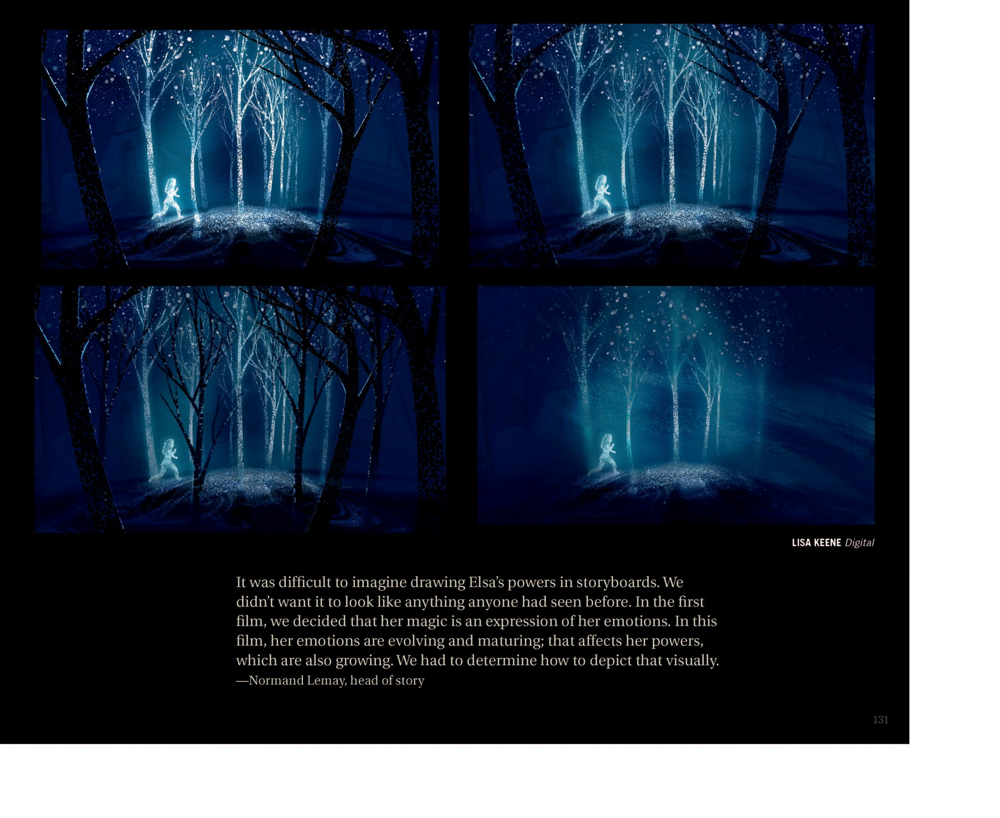
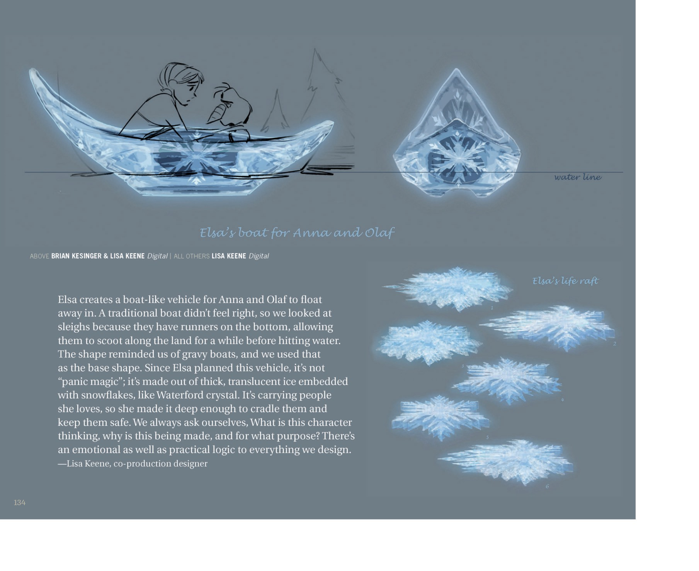
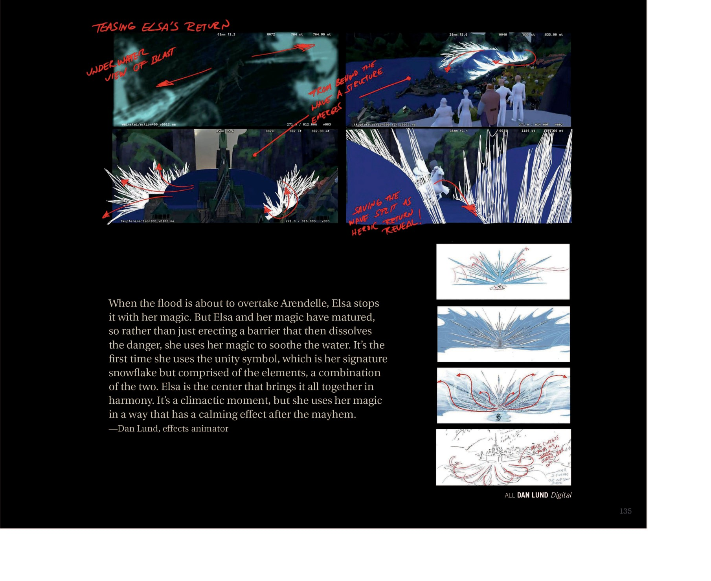
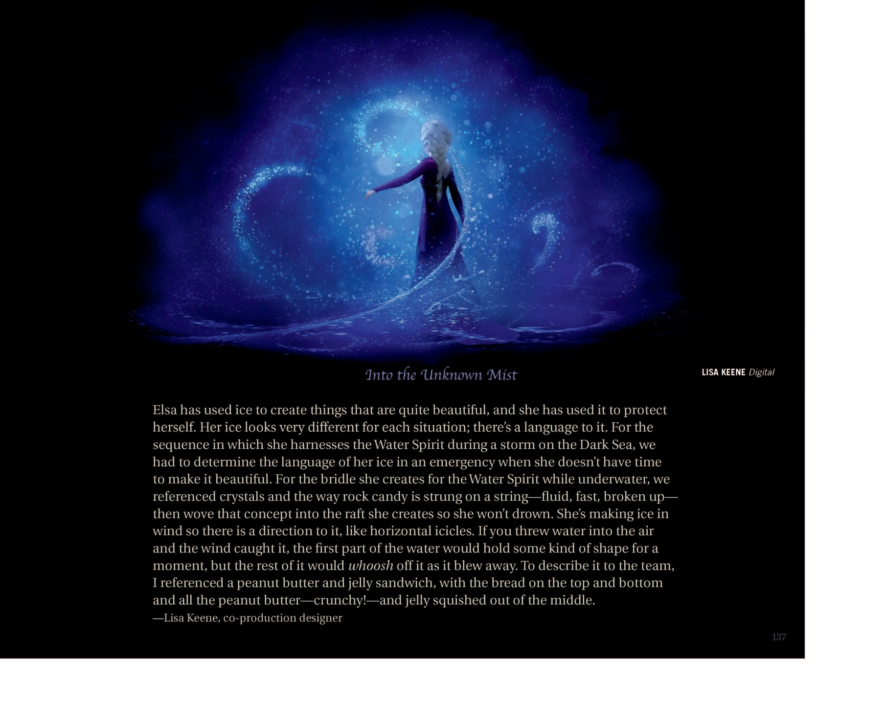
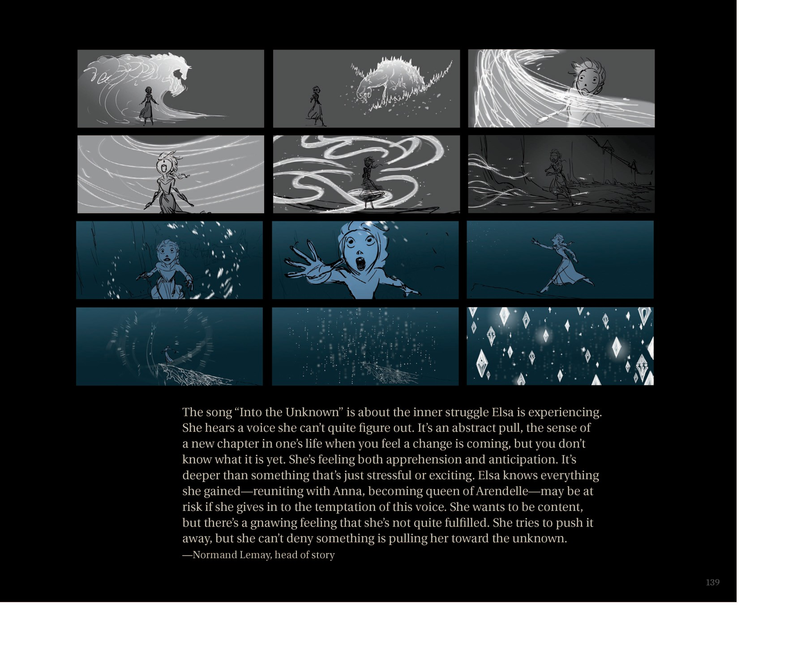
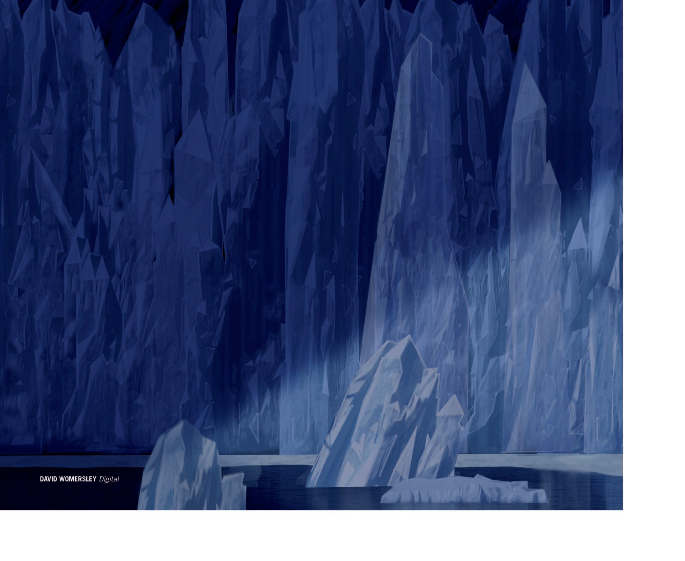

📖 设定集 · F2设定集
F2 图版 · 艾莎的魔法
F2 官方设定集图版 · p134–p144
5
本卷页数
🎨
设定集
中/英
双语
🖼️ F2 官方设定集 · 原书图版
F2 图版 · 艾莎的魔法
《The Art of Frozen II》（Jessica Julius, Chronicle Books 2019） p134–p144
8
图版
p134–p144
原书页码
原书
扫描原图
笔记
逐页图注
🪄 「Elsa's Magic」章节：魔法的视觉化与技术挑战、SEQ 250 形态指南、给安娜和雪宝的冰船、雪花图形变体，以及《Into the Unknown》序列的分镜。
✨ Elsa's Magic（p134–p144）

Chapter 标题页 — "Elsa's Magic"
章节标题"Elsa's Magic（艾莎的魔法）"；Steve Goldberg 解读：Elsa 的力量成长了——第一部她在峡湾冻住的水面是平静的，但本片中她要冻住 Dark Sea 巨大的冲击波。随着 Ahtohallan 向她呼唤，她引导记忆并创造出她不知其意的雕塑——她并非有意创作。她正承载着比自己强大得多的自然（F2设定集原页）

Elsa's Magic — 故事板
Normand Lemay（故事总监）：在分镜里画 Elsa 的魔法很难——不想让它像任何已被看过的东西。第一部时魔法是情感的表露；本片中她的情感在演化成熟，魔法随之成长。需决定如何视觉化这种成长。（F2设定集原页）

Elsa's Magic — 技术挑战
Mark Hammel（技术总监）：Elsa 在水运动时冻住它——水变冰再碎裂、她与水灵互动——这些都带来新技术挑战。流程是先尝试现有工具；不行就与软件工程师、技术总监合作；艺术指导也深度参与，确保达到影片特定的视觉风格。Frozen 2 使用一种"颗粒介质模拟引擎"——可处理水、泥、雪等不同黏度，并实验如何把单颗水粒（F2设定集原页）

Elsa's Magic — 给 Anna 和 Olaf 的冰船
Lisa Keene 解说：Elsa 为 Anna 和 Olaf 创造了"船形载具"让他们脱险。传统船不对味，改参考雪橇（底部有滑木，可在陆地滑行一阵才入水）；形状让人想到肉汁船（gravy boats），用作基形。因为是 Elsa 计划过的，所以这不是"panic magic"——是用厚实半透明冰、内嵌雪花（像 Wa（F2设定集原页）

Elsa's Magic — Teasing Elsa's Return（预告艾莎归来）
红色批注指引"水下爆炸视角、浪后浮现结构、波浪裂开如马揭示英雄登场"等镜头语言。Dan Lund：当洪水即将淹没 Arendelle，Elsa 用魔法阻住。但 Elsa 与她的魔法已成熟——不再只是造屏障把危险消解掉，而是用魔法"安抚"水。这是她第一次使用"unity symbol（统一标志）"——她标志性雪花与元素符（F2设定集原页）

Water 章节内（Into the Unknown 序列前页）
标题"Into the Unknown Mist"。Lisa Keene 解释 Elsa 冰的语言在不同情境下不同：在 Dark Sea 风暴中她必须紧急控制 Water Spirit，没时间把冰做漂亮。水下 Water Spirit 的缰绳参考了水晶与串糖葫芦——流动、快速、易碎。她在风中造冰呈水平冰柱状，扔到空中被（F2设定集原页）

Water 章节内（Into the Unknown 序列 storyboard 续）
故事总监 Normand Lemay 解读"Into the Unknown"主题：这是 Elsa 的内心挣扎。她听见一个说不清的声音，是一种"新篇章将至"的抽象牵引——既焦虑又期待，比单纯的兴奋或压力更深；她知道若追随那声音，与 Anna 重逢、成为女王的一切可能受威胁；她想要安定却总有不满足感，想推开却无法否认被未（F2设定集原页）

Water 章节末尾/过渡至 Ahtohallan 章节
单一署名 David Womersley。画面无文本。（F2设定集原页）
💡 图注说明
本页全部图版为《The Art of Frozen II》（Jessica Julius, Chronicle Books 2019）原书扫描（原图复制，未压缩），图注（中文标题 + 要点首句）逐页取自官方设定集中文笔记，点击图片可查看原尺寸扫描。
📌 本页要点
你正在阅读《设定集》卷的「F2 图版 · 艾莎的魔法」。本页由电影正典、官方设定集与官方小说综合梳理，可作为该主题的速查入口；右侧目录可快速跳转到本页各小节。